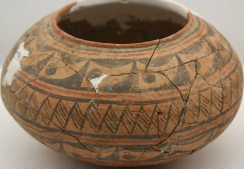

彩陶器
大汶口文化早期（约公元前4400〜前3600年）
山东省兖州市王因遗址 首都博物馆
Painted Pottery Pot
Early Dawenkou Culture (c. 4,400—3,600 BCE)
Excavated from Wangyin Site, Yanzhou, Shandong. Capital Museum, Beijing
The Dawenkou Culture (4,100—2,600 BCE) was a group of Neolithic communities centered around Shandong but also appearing in Anhui, Henan, and Jiangsu.

彩陶钵
大汶口文化早期（约公元前4400〜前3600年）
山东省兖州市王因遗址 首都博物馆
Painted Pottery Bowl
Early Dawenkou Culture (c. 4,400—3,600 BCE)
Excavated from Wangyin Site, Yanzhou, Shandong. Capital Museum, Beijing
The Diaolongbei 雕龙碑 site is located about 25 km northeast of the city of Zaoyang, Hubei. The site was discovered in 1957 and has plentiful late Neolithic artifacts, including dwellings, cellars, tombs, eating utensils, and tools. The picture below shows a painted pottery container from the Diaolongbei site.

{kind=link}
彩陶器
盛储器（约公元前3800〜前3300年）
湖北省枣阳市雕龙碑遗址出土 首都博物馆
Painted Pottery
A Container (c. 3,800—3,300 BCE)
Excavated at the Diaolongbei Site, Zaoyang, Hubei. Capital Museum, Beijing